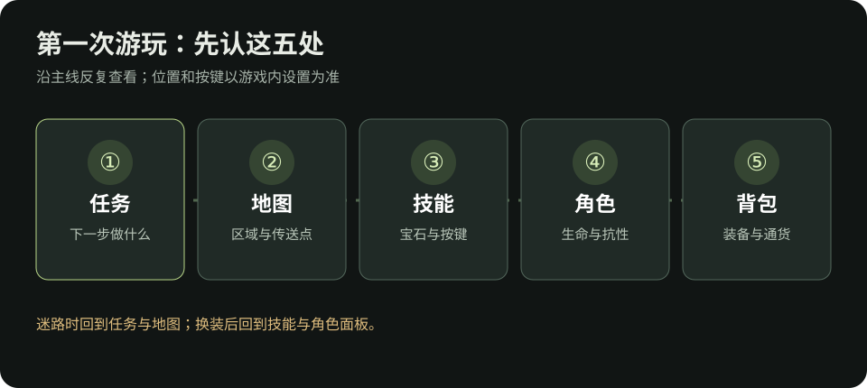

流放之路 2：第一次游玩的前 60 分钟
完全没玩过？从这里开始。时间只是节奏参考，不是限时任务。界面名称和位置可能随版本、平台变化；找不到按钮时以游戏内提示和设置中的按键说明为准。核对日期：2026-10-09。
建角时先做两个选择
- 联盟：想和其他玩家交易、照着本 Wiki 的买卖步骤学习，选择当前普通交易联盟。单人自力（SSF）无法与玩家交易，适合想完全靠自己掉落和制作装备的人；硬核模式有额外死亡限制。第一次玩、还不确定时，普通交易联盟通常更容易按本文流程求助和补装备。
- 职业：先选你愿意持续玩的技能风格。职业决定天赋树起点和可选升华，但开局不用找“全游戏最强职业”。如果已有喜欢的技能，按工具与 BD 学习反查常见职业。
创建角色后，先打开设置 → 操作／按键，认出角色面板、技能、背包、任务和地图各自的入口。键鼠与手柄的按键不同，本页只写要打开的界面。

0～15 分钟：跟任务走，先让一个技能能用
- 跟随当前主线任务标记前进，沿路激活遇到的传送点。地图上的未探索区域和任务目标比“把每个角落搜完”更重要。
- 拿到未切割技能宝石时，按说明刻印一种当前能使用的技能；在技能界面装备它，并把它放到顺手的按键。使用时若变灰，先看武器类型、属性、等级与资源要求。
- 拿到辅助宝石后，把它放入想加强的技能插槽，再看技能面板是否显示生效。辅助宝石只影响它所连接的技能；不要只因说明写“提高伤害”就认为一定适用。
- 学会闪避与使用生命／魔力药剂。第一次打首领，先观察地面提示和攻击前动作，再找安全间隙输出。
现在的完成标准：能指出主要输出技能、它使用的武器，以及战斗中缺的是生命还是魔力。还不需要确定最终 BD。
第一次装技能，照这个顺序点
- 打开背包，找到“未切割技能宝石”，按物品说明打开刻印界面。选一个与你目前武器、属性要求相符的技能；刻印前先读技能标签与要求。
- 打开技能界面，把得到的技能宝石放入可用技能位置；再按界面提示把它分配到顺手的操作键。键鼠与手柄的按法不同，照当前客户端屏幕提示操作。
- 到安全的普通怪旁试用一次。能施放且魔力能维持，才继续装辅助宝石；辅助宝石要进入这项技能自己的插槽，并检查它没有显示为失效。
- 如果按键没有反应，先在技能界面确认已装备、已分配按键、武器匹配、属性足够，再去技能排查。

15～40 分钟：第一次回城，整理四样东西
金币与通货要分开：金币常用于商人和部分游戏内服务；蜕变石、富豪石等通货既能改造物品，也可能用于交易。不要因为背包里有某种通货，就立即把它用在第一件掉落上。装备值不值得投入，先看新手做装备。
40～60 分钟：建立每章都能重复的习惯
- 接任务 → 开传送点 → 完成目标 → 领取奖励。击败首领后，留意任务是否还要求拾取、使用物品或与 NPC 对话；开荒奖励清单可查容易漏掉的永久奖励。
- 每次换装看角色面板。装备上一件新武器或防具后，检查技能是否可用、生命／能量护盾和实际抗性是否变化。若数字变差，换回旧装备再比较。
- 只解决当前最明显的问题。清怪慢先查技能与武器；经常死先查抗性和防御；迷路先看任务与地图。别同时重做技能、天赋和整套装备。
找不到任务地点时
先读任务文字里的章节、区域和 NPC 名称，再打开世界地图找对应区域与传送点。传送到区域后再看该区域的局部地图；局部道路和首领位置可能随实例变化。完成目标后，如果任务没有结束，检查地上的任务物品、背包里的可使用奖励，以及城镇里是否有交任务的 NPC。找永久奖励可直接按开荒篇的章节表定位。
若任务标记仍不清楚，记录任务名称和当前区域，再按求助信息模板提问，比只说“我迷路了”更容易得到准确路线。
前 60 分钟结束时的检查
- 我知道如何打开任务、地图、技能、角色和背包界面。
- 我能使用至少一个主输出技能，知道对应武器要求。
- 我知道换装备后要复查技能、生命与抗性。
- 我知道金币和改造装备的通货用途不同。
- 我会按任务推进，不要求自己在第一小时学会整棵天赋树。
接下来按新手起步路线继续推战役；遇到装备词缀看不懂时先读看懂一件装备，要查角色是否变强就读看懂角色面板。
想认识社区常说的“BD、满抗、刷图、E、D”，随时打开名词与黑话对照；想给自己留一点探索空间，可看游玩乐趣与避雷。
资料
- PoE2 Wiki：技能宝石、未切割辅助宝石：技能与辅助的基础用法。
- PoE2 Wiki：单人自力模式：交易限制和模式差异。
- GGG 官方 0.5.0 更新说明：当前系列的游戏内 BD 指南和交易功能变化。